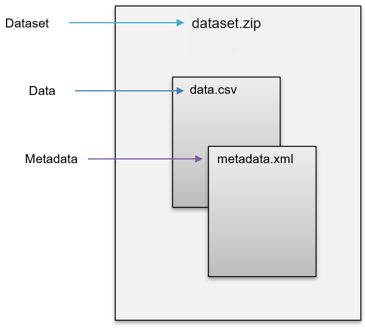

Open
Data Format: Specification
Open
Data Format: Specification
Specification of the Open Data Format
The Open Data Format (ODF) is dedicated to providing a non-proprietary data format for data exchange and dissemination. In other words, it is the data format that data producers can provide while data users can import the data format into several statistical software.
The ODF consists of data and metadata organized in two separate files (see Figure 2). The data is stored in CSV format and the metadata is in XML. For data exchange, both files are packed into a ZIP file. The ZIP file corresponds to the dataset to be used for various statistics programs through import filters. Vice Versa, statistical software is to be capable of exporting the native format to the ODF.
The DDI-Codebook 2.5 metadata schema is the basis for the specification of the metadata component in the ODF. Besides the DDI-Codebook 2.5 schema, the ODF is to be extendable with further existing metadata schemas.
Specification of a data file in the Open Data Format
Profile
For the specification of a data format’s metadata component, a profile is a useful tool. Typically, there are numerous possibilities and variations on how metadata can be stored, even if it is the same file format and the same metadata schema. This is a problem for the development of technical solutions that are intended to use this metadata. Especially when it comes to integrating different software, different file formats, and different metadata schemas. Since a metadata profile gives an overview of the semantic definition of the used elements, attributes, and their constraints, a profile is an essential tool for documenting the basis of application programming and establishing interoperability between different technical environments.
For the Open Data Format, the specification of the metadata component is oriented towards a standardized and well-established structure since it is based on the DDI-Codebook 2.5 schema. According to the DDI Alliance, DDI is “a very flexible and complex standard that may be used by various projects or organizations in ‘customized’ ways that best answer specific needs” (Source: https://ddialliance.org/learn/resources/ddi-profiles). The profile of the DDI-Codebook 2.5 schema, developed in this project, describes which DDI elements are ‘Used’ or ‘Not Used’. Table 1 provides a preview of the DDI-Codebook 2.5 profile specified for the Open Data Format.
| element.label | element.description | xml file | xml_classification | |
|---|---|---|---|---|
| 20 | variable name | The attribute “name” usually contains the so-called “short label” for the variable, limited to eight characters in many statistical analysis systems such as SAS or SPSS. | //codeBook/dataDscr/var\[@name\] | mandatory if ‚var‘ element is present |
| 21 | variable label | A short description of the variable. In the variable label, the length of this phrase may depend on the statistical analysis system used (e.g., some versions of SAS permit 40-character labels, while some versions of SPSS permit 120 characters), although the DDI itself imposes no restrictions on the number of characters allowed. | //codeBook/dataDscr/var/labl | optional |
| 22 | language tag | Attribute to specify the language of the
|
//codeBook/dataDscr/var/labl\[@xml:lang\] | mandatory if ‚labl‘ element is present |
Table 1: Preview of the Open Data Format metadata profile based on the DDI-Codebook 2.5 schema
Besides the documentary function, a profile is a handy tool for validating a metadata file. The Consortium of European Social Science Data Archives (CESSDA) provides an online application for validating metadata XML files (CESSDA Metadata Validator). The validator checks if the structure, semantics, or the mandatory or optional usage of tags within the metadata XML file corresponds to the declarations of the profile. Since we provide a (DDI XML profile), you can use the CESSDA Metadata Validator to verify if your metadata is already interoperable with the metadata profile specified for the ODF. To test the validator tool from CESSDA you can download the metadata file from this repository (metadata.xml) and validate against the ODF profil (profile.xml). For further information on the metadata profile, see Profile.